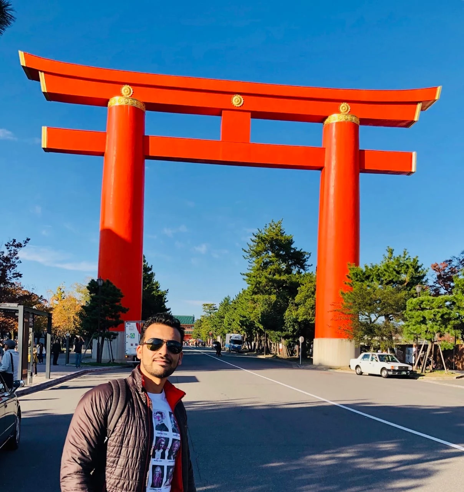
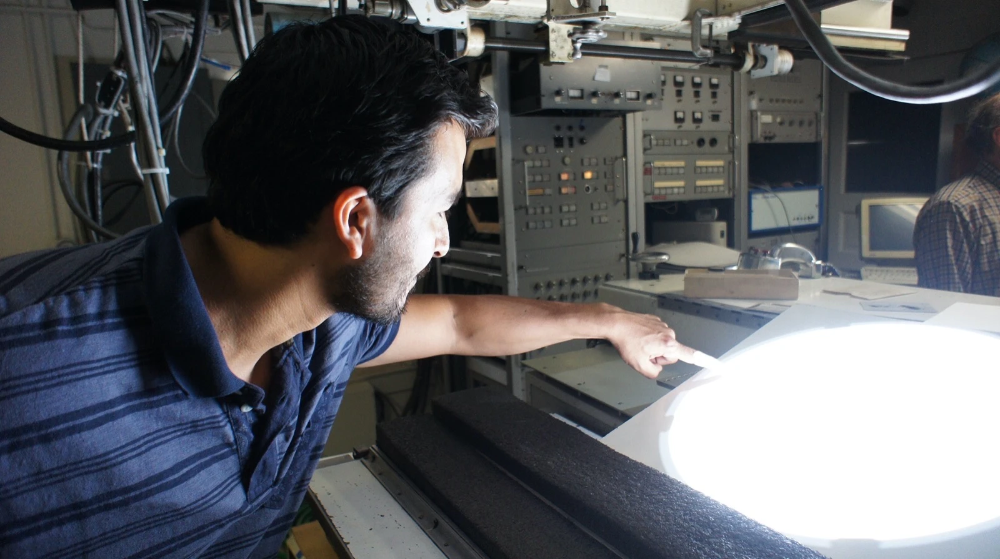
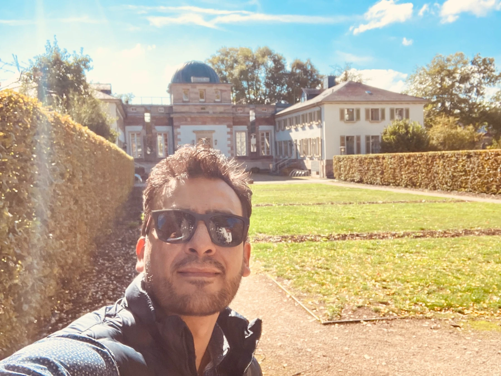
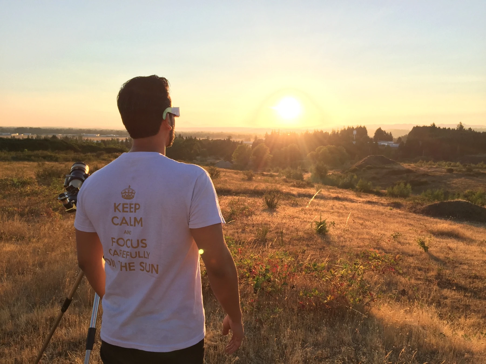

Ha trabajado en observatorios e instituciones de España, Países Bajos, Reino Unido y Estados Unidos. Desde 2014 está vinculado al Observatorio Astronómico Nacional de la Universidad Nacional de Colombia, donde lidera el Grupo de Astrofísica Solar y participa en la formación de estudiantes de pregrado y posgrado.
Sus intereses también abarcan la historia de la astronomía, el patrimonio científico, la relación entre arte y ciencia y la educación inclusiva. Desde 2014 escribe sobre ciencia en el periódico El Tiempo.
FORMACIÓN
De Bogotá al estudio del Sol.
2008
Doctorado en Astrofísica
Instituto de Astrofísica de Canarias, España. Doctor Europeus. Tesis sobre flujos horizontales en regiones solares activas mediante técnicas de alta resolución. Dirección de Valentín Martínez Pillet y José Antonio Bonet.
2004
Maestría en Astronomía
Instituto de Astrofísica de Canarias, España. Investigación sobre la distribución espacial de poblaciones estelares en M33, con Antonio Aparicio y Carme Gallart.
Profesor asociado del Observatorio Astronómico Nacional y líder de GoSA. Participación en los programas de Maestría y Doctorado en Ciencias – Astronomía y en la Maestría en Enseñanza de las Ciencias Exactas y Naturales.
Gotinga, Alemania. Investigación del Sol y del sistema solar. Pradeep Chitta participó en la coordinación científica del taller DynaSun 2024; el directorio actual del consorcio indica a Regina Aznar como contacto institucional.
Estancia de dos semanas en Tokio con Yukio Katsukawa. Análisis de datos del satélite Hinode.

Estancia en el National Astronomical Observatory of Japan · Japón.

Visita a la torre del telescopio solar de 150 pies del Mount Wilson Observatory · California, Estados Unidos.

Visita al Göttingen Observatory · Gotinga, Alemania.

Observación del eclipse total de Sol del 21 de agosto de 2017 · Oregón, Estados Unidos.
CREACIÓN Y EDICIÓN ACADÉMICA
eSPECTRA, un espacio para nuevas voces.
Santiago Vargas es el creador y editor principal de eSPECTRA, la revista del Observatorio Astronómico Nacional de Colombia. Nació en 2023, durante la conmemoración de los 220 años del Observatorio, como una iniciativa para compartir investigaciones en astronomía, astrofísica y ciencias del espacio.
La revista da especial visibilidad a los trabajos de estudiantes y jóvenes investigadores. Combina artículos de investigación con divulgación, entrevistas y reseñas de encuentros, y conecta la formación académica con la circulación del conocimiento entre distintas comunidades.
Su labor editorial se complementa con el diseño de las portadas, concebidas para invitar a explorar los temas de cada edición.